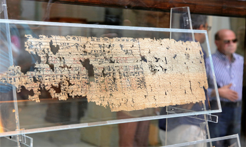
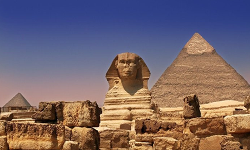
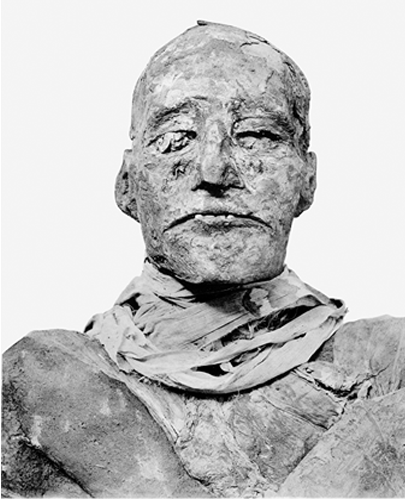
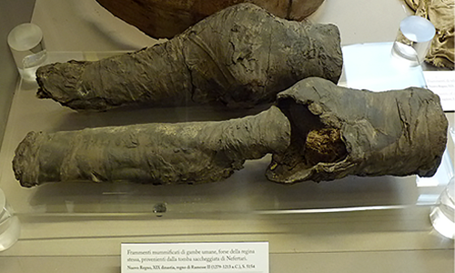
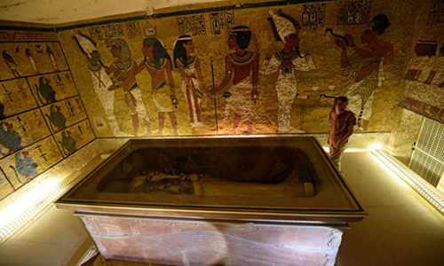

A descoberta do mais antigo manuscrito egípcio foi um dos acontecimentos mais marcantes do ano 2016.
O manuscrito data da época do reinado de Khufu, que liderou o Egito antigo no século XXVI a.C.

Papiro egípcio mais antigo exposto no Museu Egípcio em Cairo.
14 de julho de 2016

Grande Esfinge de Gizé no Egito
14 de julho de 2016
Ramsés III foi alvo de cirurgia cosmética após a morte

Múmia de Ramsés III
A radiologista da Universidade de Cairo Sahar Saleem, que estudou múmias reais no Museu Egípcio, encontrou os restos de Ramsés III. Ela descobriu que o faraó foi assassinado por vários assaltantes com diferentes armas.
De acordo com a pesquisadora, o dedo do pé de Ramsés III foi cortado, provavelmente com um machado durante um ataque face a face. Na mesma briga a garganta do faraó foi rasgada por detrás com algo parecido com uma faca obsidiana.
Mas o fato mais interessante descoberto pela pesquisadora é que, após a morte, o faraó passou por uma espécie de cirurgia cosmética para que a sua múmia parecesse mais atraente.
Restos mumificados da bela rainha Nefertari
Outra descoberta importante ligada com múmias foi feita em 30 de novembro do ano corrente. Os pesquisadores informaram que finalmente conseguiram resolver o mistério das pernas mumificadas que foram encontradas ainda em 1904 no túmulo da rainha Nefertari.

Pernas mumificadas da rainha Nefertari
Entrada secreta por trás de tumba de Tutancâmon
Mas a descoberta mais mencionada em 2016 foi o estudo do túmulo de Tutancâmon, feito no Vale dos Reis. Um dos especialistas em história do Egito mais famosos do mundo, o doutor britânico Nicholas Reeves da Universidade de Arizona (EUA) estudou as paredes do tumulto do famoso faraó, sugerindo que estas poderiam esconder muitos segredos.

Sarcófago do rei Tutancâmon
Infelizmente outra pesquisa com uso de técnicas radiológicas realizada por uma equipe apoiada pela Sociedade National Geographic não provou a teoria. Em 11 de maio, o jornal Life Science informou que as câmaras não foram encontradas.
Reeves acredita também que o túmulo da rainha Nefertari, que por muito tempo esteve perdido, poderia se encontrar por trás de entrada secreta do túmulo de Tutancâmon.